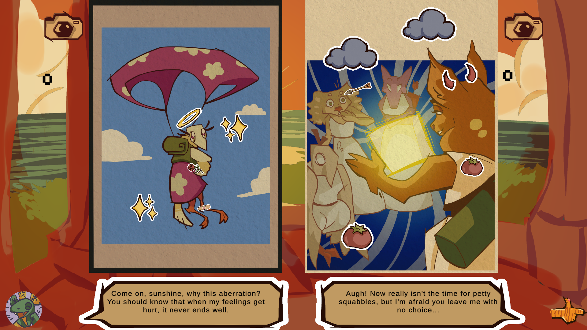
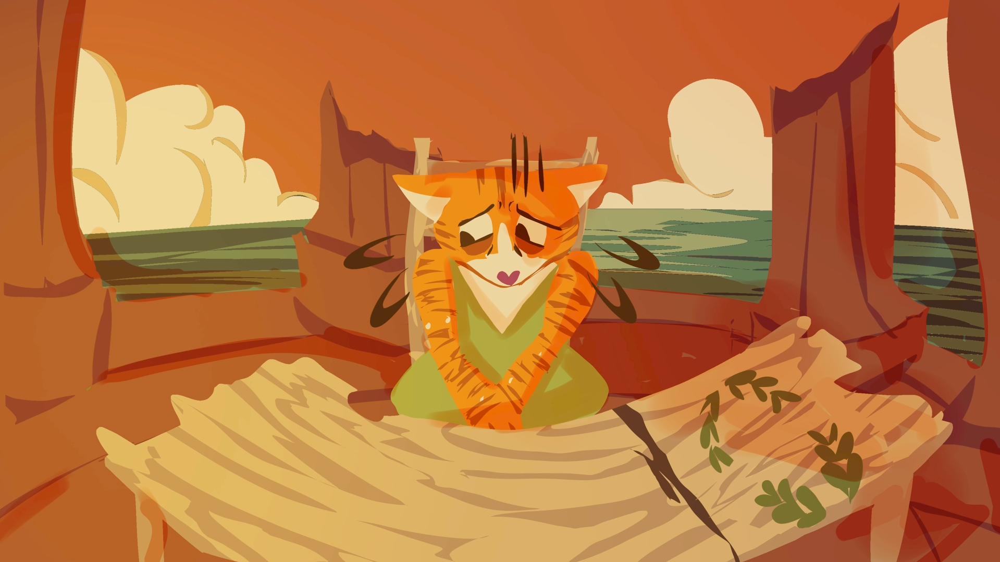
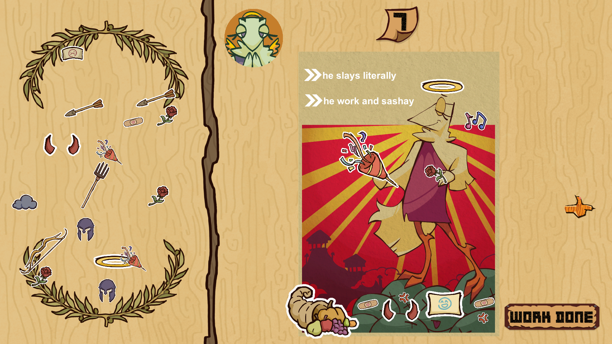
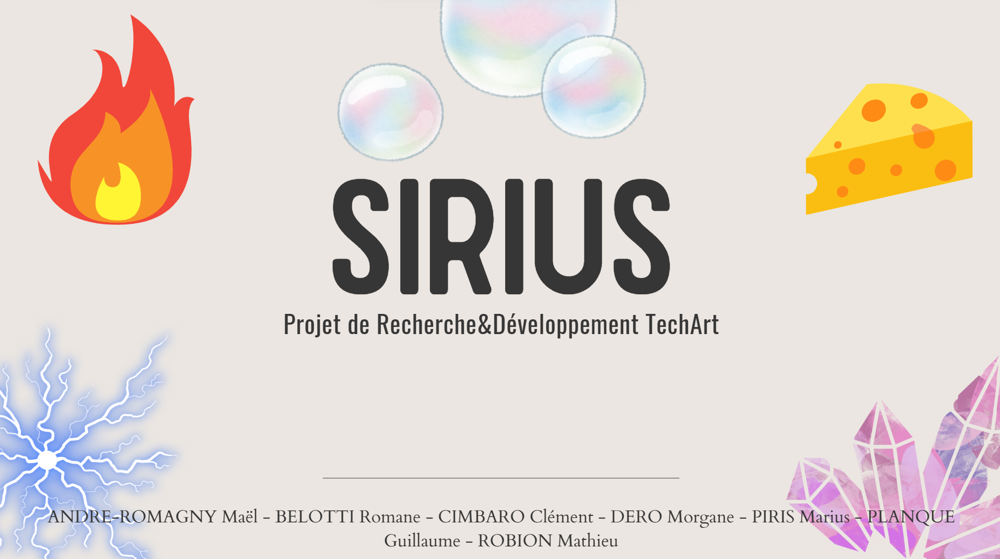
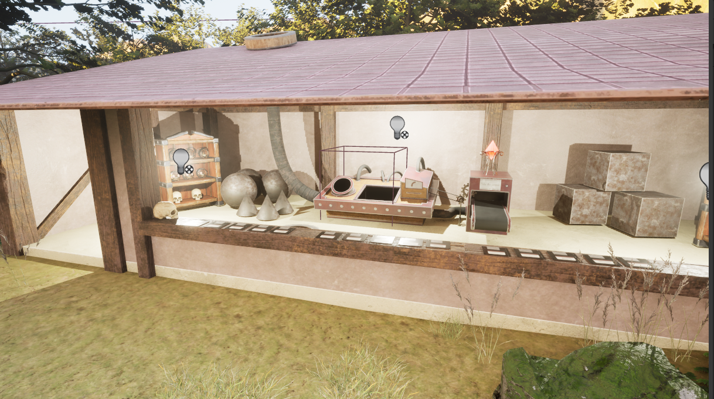
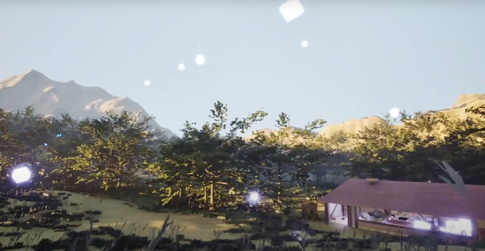
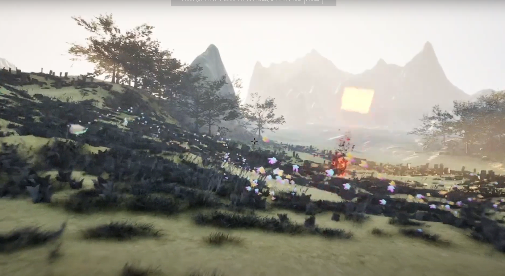
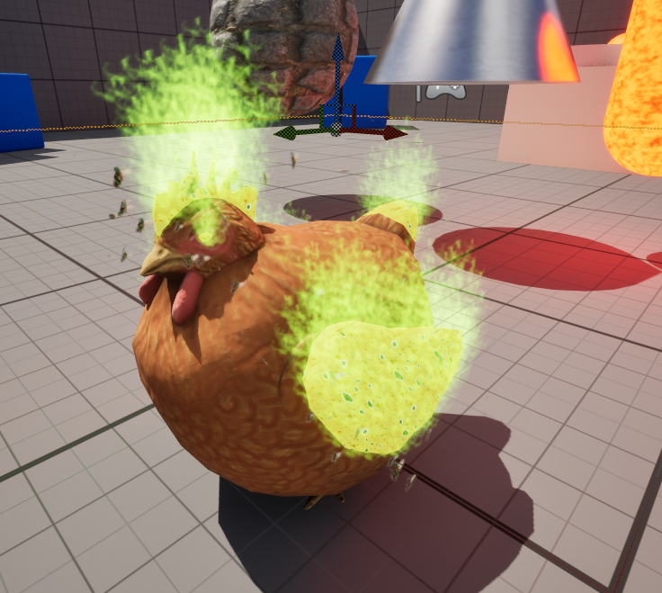

À propos de moi
Marius Piris
Développeur Unity, Unreal Engine 5, Godot & Full Stack
Je m'appelle Marius Piris, étudiant en 3ème année de Game Programming, passionné par le développement de jeux vidéo, la création et la conception. Actuellement en formation à Isart Digital Paris, je possède de solides compétences en programmation, notamment en Python, Java, C++ et C#, ainsi qu'une expérience pratique en création de jeux et en gestion de projets.
-
Space Squad
Project about AI Behavior Tree & Flocking.

Détruisez les tourelles à l'aide de vos fidèles soldats.
Vos soldats vous obéissent au clic et au clic.
Réalisé à Isart Digital en 2025.
Voir sur Itch.io


Ma place au sein de l'équipe
Un projet d'apprentissage sur le fonctionnement des IA dans les jeux.
Voir plus -
Mytho Logie
Jeu de puzzle déjanté avec une histoire à choix.
Placez des stickers sur des affiches en suivant les demandes des dieux pour gagner leur affection.
Gagnez des points pour débloquer encore plus de stickers.
Suivrez vous les ordres des dieux ou vous en tiendrez vous à vos principes ?
Réalisé lors de la Game Jam GameWeek d'Isart Digital Paris en 2025.
 

Ma place au sein de l'équipe
Un défi technique réalisé en quelques jours lors de ma première semaine à Isart Digital Paris.
Voir plus -
Super Sushi Speed
Jeu de rythme avec des niveaux de plus en plus difficile générés semi-procéduralement !
Aidez le sushi mutant à s'échapper !
Alternez gauche et droite en rythme pour avancer (et sauter ou se précipiter).
Mangez du wasabi pour muter encore plus et gagner en vitesse (débloque le double saut) !
Réalisé lors de la Game Jam ScoreSpaceJam en 2024.
Voir sur Itch.io


Ma place au sein de l'équipe
Un jeu palpitant où vous incarnez un sushi mutant lancé à pleine vitesse.
Voir plus -
Pot Of Greed
Un mini Rogue-Lite avec un boss fight, un speedrun avec plus de 300 possibilités.
Vous êtes un jeune alchimiste en formation dans la forêt.
Collectez des ingrédients, tuez des monstres et affrontez Goru - Le Pot de la Convoitise.
(Plus de 300 possibilités - généré de manière procédurale)
Un jeu réalisé par Piris Marius, étudiant à l'IUT d'Orsay, Paris Saclay dans le cadre d'un projet en 2024.
Voir sur Itch.io


Mes réalisations
Ce jeu est le premier prototype du système de combinaison runique qui donnera plus tard Archipelago-JDR.
Voir plus -
Sirius Project
Projet de Tech-Art avec des sorts générés procéduralement.
Générateur de sorts Procéduraux à destination des développeurs sur Unreal Engine 5.
Réalisé au cours d'un Projet de Recherche & Développement "Tech-Art" à Isart Digital Paris en 2025.
   Ma place au sein de l'équipe
Système de fabrication de sorts procéduralisés
Fusion de Shaders automatisés Ajout de VFX en runtime Création d’un environnement de jeu procédural Impact des sorts sur l’environnement en runtime (cratères, propagation du feu, zone de glace glissante...) Pousse de plantes procédurales en runtime
Voir plus